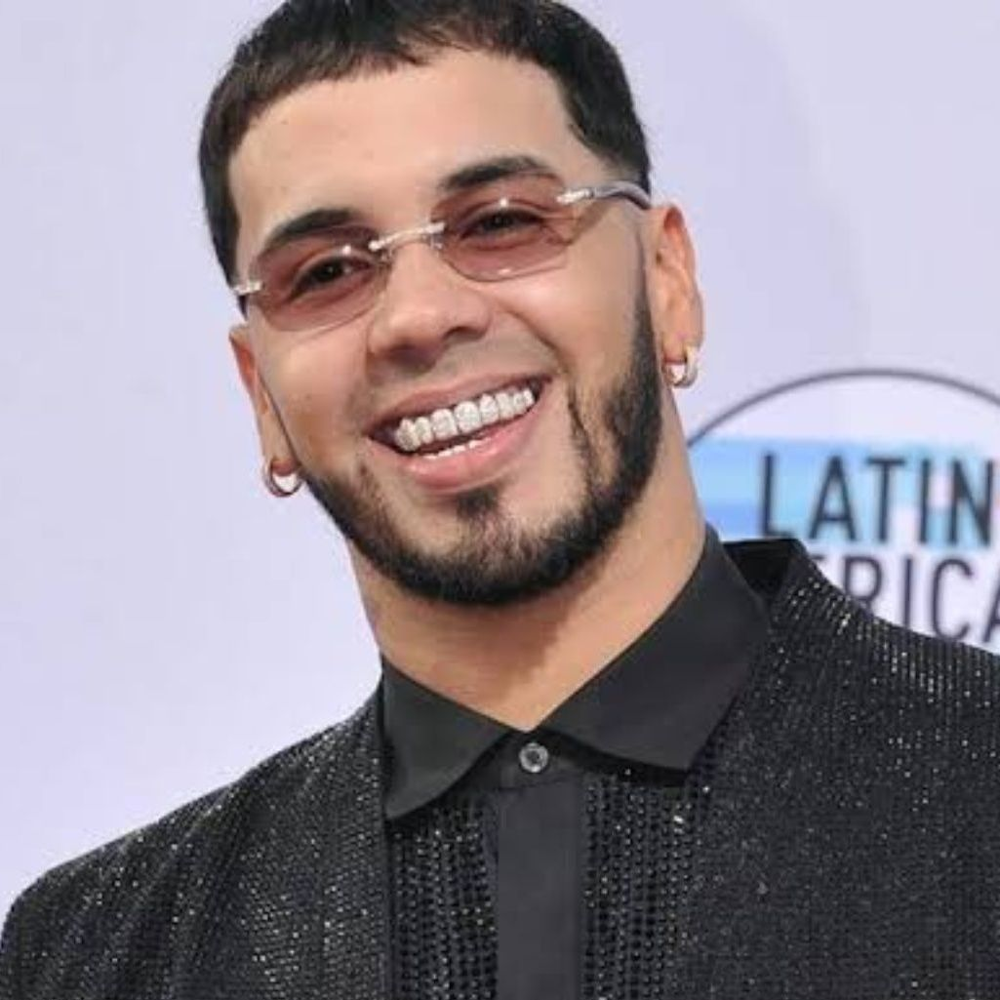
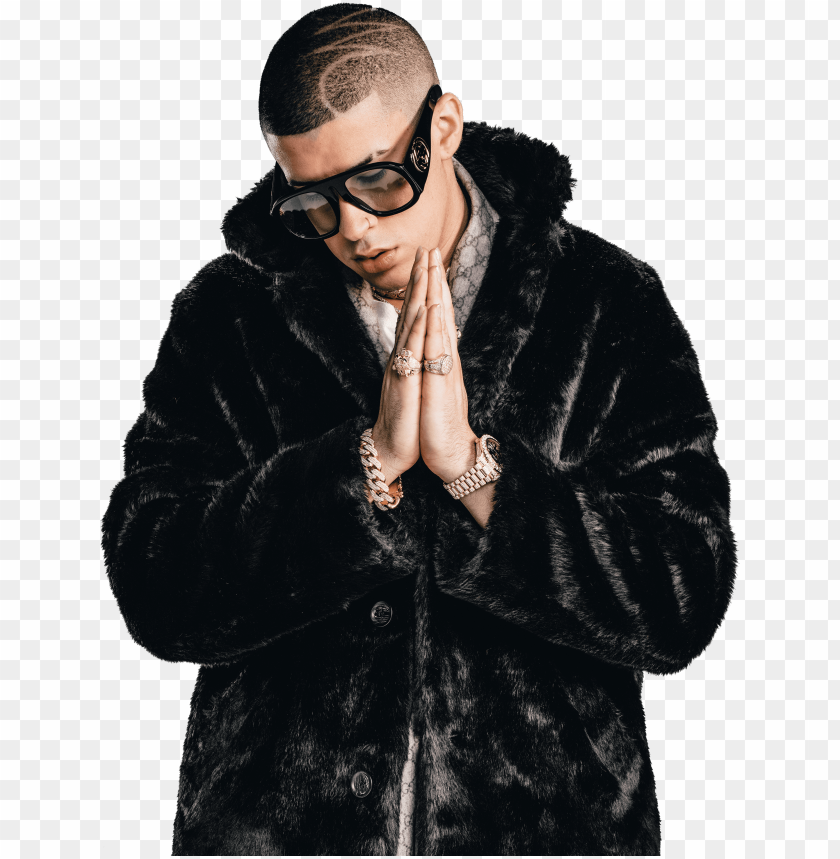

EN ESTE ESPACIO HABLAREMOS DE LA HISTORIA Y ORIGEN DE LOS ARTISTAS NACIONALES E INTERNACIONALES
1-DADDY YANKEE
Ramón Luis Ayala Rodríguez, más conocido como Daddy Yankee, es un cantante, actor, productor discográfico, locutor de radio y empresario puertorriqueño
Nacimiento: 3 de febrero de 1977 (edad 46 años), San Juan, Puerto Rico
Años activo: 1994-presente
Cónyuge: Mireddys González
Hijos: Yamilette Ayala González, Jeremy Ayala González, Jesaaelys Ayala González
2-FARRUKO
Carlos Efrén Reyes Rosado, mejor conocido por su nombre artístico como Farruko, es un cantante y compositor puertorriqueño. Se especializa en los géneros musicales de reguetón, trap latino, Reggae &. Dancehall.
Nacimiento:2 de mayo de 1991 (edad 29 años), Bayamón, Puerto Rico
Años activo: 2007–presente
Cónyuge: Kairy Lopez
3-NATANAEL CANO
Natanael Cano (Hermosillo, 1 de mayo de 2001) es un cantautor mexicano del género regional. Es el creador del concepto corridos tumbados1, nombre de uno de sus discos. Su música fusiona géneros de música regional mexicana tales como el corrido y sierreño-banda con hip-hop y trap.
Nacimiento: 1 de mayo de 2001 (21 años)
Nacionalidad: Mexicano
4-Residente
René Pérez Joglar, conocido artísticamente como Residente, es un rapero, compositor, cantante, productor y activista puertorriqueño. Fue miembro fundador y vocalista de Calle 13, banda que integró junto a su hermana Ileana Cabra «iLe» y su hermanastro Eduardo Cabra «Visitante». En 2015 inició su carrera como solista.
Nacimiento 23 de febrero de 1978 (45 años) · San Juan, Puerto Rico, (Estados Unidos)
Años activo 2004-presente
5-El Alfa el jefe
Emanuel Herrera Batista, conocido artísticamente como el Alfa o el Alfa el Jefe, es un rapero, cantante, compositor y productor dominicano.
Nacimiento 18 de diciembre de 1990 · Bajos de Haina (32 años)
Años activo 2008-Presente
6-Anuel AA

Emmanuel Gazmey Santiago, conocido artísticamente como Anuel AA, es un rapero puertorriqueño de reguetón y trap latino. En 2016 el artista fue aprehendido y privado de su libertad y meses después fue sentenciado a 30 meses de prisión por posesión de armas de fuego.
Nacimiento: 26 de noviembre de 1992 (edad 30 años), Carolina, Puerto Rico
Años activo: 2010-Activo
Nombre de nacimiento:Emmanuel Gazmey Santiago
7-Eladio carrion
éxitos pre-debut fueron 2×2 con Flowsito y No quiero más amigos nuevos con Rawenz. Finalmente debutó en 2017 con Me enamoré de una Yal, tema al que siguieron Si tú te vas, Mi Cubana y Ave María, entre otros.
Nombre Completo -Eladio
>
Nacimiento- noviembre 14, 1994
Edad- 28 años
Ocupación -Cantante, influencer
Nacionalidad- Estadounidense / Puertorriqueña
8-Bad Bunny

Benito Antonio Martínez Ocasio, conocido artísticamente como Bad Bunny, es un rapero, cantante, compositor y productor puertorriqueño.
10 de marzo de 1994 (29 años) · Almirante Sur (Puerto Rico)
.png)